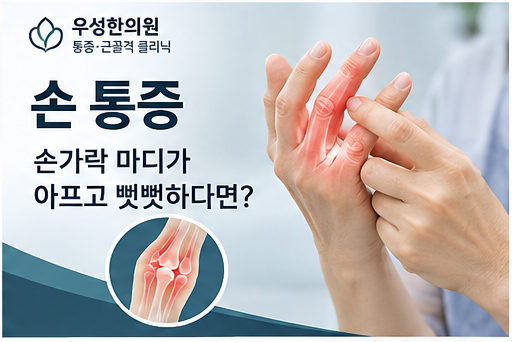

01. 손가락 관절의 퇴행성 변화
통증 양상과 사용 습관을 함께 확인합니다.
WOOSUNG · PAIN CARE GUIDE
손가락 관절이 붓거나 아침에 뻣뻣하고 물건을 잡기 어려울 수 있습니다. 원인과 증상, 생활관리 방법을 살펴보세요.
진료 문의 031-975-3075통증클리닉 전체 보기
통증 부위만으로 원인을 단정할 수 없습니다. 증상이 시작된 상황과 움직임, 동반 증상을 함께 확인해야 합니다.
통증 양상과 사용 습관을 함께 확인합니다.
진찰 결과에 따라 다른 원인과 구분할 필요가 있습니다.
외상 및 기존 질환 여부도 중요한 판단 자료입니다.
어느 마디가 붓는지, 아침 뻣뻣함이 얼마나 지속되는지 확인하세요.
언제부터 아팠는지, 어떤 동작에서 심해지는지, 저림·부종·발열 등 다른 증상이 있는지 기록하면 진료 상담에 도움이 됩니다.
반복적인 강한 쥐기 동작을 줄이고 손가락을 부드럽게 움직이세요.
증상이 악화되는 동작은 피하고, 증상이 오래가거나 반복된다면 진료를 통해 원인을 확인하세요.
응급 증상이 의심된다면 한의원 예약을 기다리지 말고 응급실 또는 119를 이용하세요.
우성한의원은 문진과 진찰을 바탕으로 통증의 위치·기간·움직임에 따른 변화와 생활습관을 살펴봅니다. 필요한 경우 근육·힘줄·인대 등 연부조직 상태 확인을 위해 초음파를 보조적으로 활용할 수 있습니다.
진찰 결과에 따라 침 치료, 약침, 추나요법, 부항, 한방 물리요법 또는 한약 상담 등을 고려할 수 있습니다. 모든 치료가 모든 환자에게 적합한 것은 아니며, 치료 효과와 부작용은 개인별로 다를 수 있습니다.
심각한 질환이나 골절, 신경학적 이상 등이 의심되면 적절한 의료기관 평가가 우선입니다.
통증클리닉 진료 방법 자세히 보기 →그럴 수 있지만 염증성 관절질환 등 다른 원인도 확인해야 합니다.
관절과 힘줄의 여러 문제에서 나타날 수 있어 지속 시간과 부종 여부가 중요합니다.
힘줄과 건초의 움직임 문제인 방아쇠수지 등에서 나타날 수 있습니다.
관련 네이버 블로그 글이 게시되면 이 영역에 해당 글 링크를 추가할 수 있습니다.